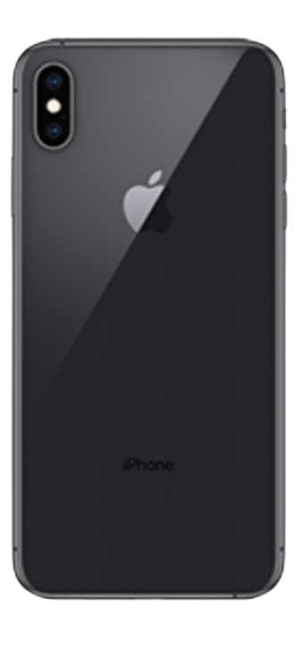
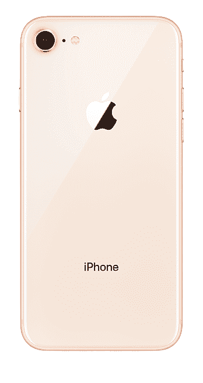

iphone 12 pro max

Original Price : 3 399 TND
=> Price Now : 2 699 TND
L'iPhone 12 Pro Max est le modèle grand-format haut de gamme de la 14e génération de smartphone d'Apple annoncé le 13 octobre 2020. Il est équipé d'un écran de 6,7 pouces OLED HDR 60 Hz, d'un triple capteur photo avec ultra grand-angle et téléobjectif (x5 optique) et d'un SoC Apple A14 Bionic compatible 5G (sub-6 GHz).
iphone 11 pro max

Original Price : 2 399,00 TND
=> Price Now : 2 199,00 TND
L'iPhone 11 Pro Max est la version grand format de l'iPhone 11 Pro. Successeur direct de l'iPhone XS Max, il dispose d'un écran OLED de 6,5 pouces, un SoC Apple A13 Bionic et un triple capteur photo arrière.
iphone xs max

Original Price : 1 700,00 TND
=>Price Now: 1 399,00 TND
L'iPhone XS Max d'Apple a été annoncé le 12 septembre 2018. Comme son petit frère, l'iPhone XS, il reprend globalement la formule introduite par l'iPhone X en apportant quelques améliorations. Il embarque un SoC Apple A12 épaulé par 4 Go de RAM, un double capteur de 12+12 mégapixels et un écran de 6,5 pouces avec encoche.

Original Price : 1 250,00 TND
=>Price Now: 1 099,00 TND
La onzième itération de l'iPhone s'appelle l'iPhone 8. Il a été annoncé le 12 Septembre 2017 et à la particularité d'embarquer iOS 11, un SoC A11 gravé en 10 nm et dispose de 64 ou 256 Go de Stockage.
News